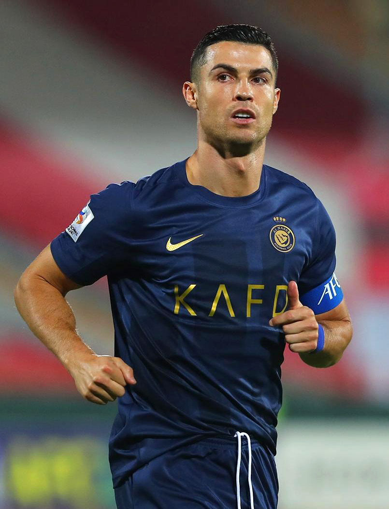

Cristiano Ronaldo transformó al Real Madrid con su ambición insaciable, rompiendo récords que parecían imposibles de alcanzar, marcando goles decisivos temporada tras temporada, ejerciendo un liderazgo silencioso pero determinante dentro y fuera del campo, levantando títulos que devolvieron al club a la cima europea, impulsando una mentalidad ganadora en todo el vestuario, con actuaciones memorables que quedarán para siempre en la historia, y dejando una huella imborrable en el fútbol mundial.
Durante su etapa en el Real Madrid, Cristiano mostró una competitividad única, convirtiéndose en el máximo goleador de la institución en tiempo récord, liderando noches épicas en la Champions League con actuaciones legendarias, inspirando a compañeros y aficionados con su entrega absoluta, superándose continuamente para mantener un nivel extraordinario, siendo pieza clave en la conquista de múltiples títulos europeos, elevando los estándares del club a su máximo nivel, y consolidándose como una leyenda eterna del conjunto blanco.